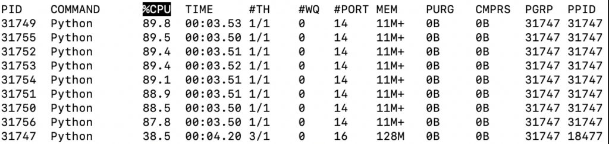
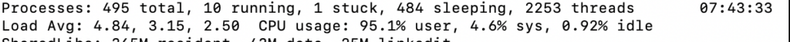
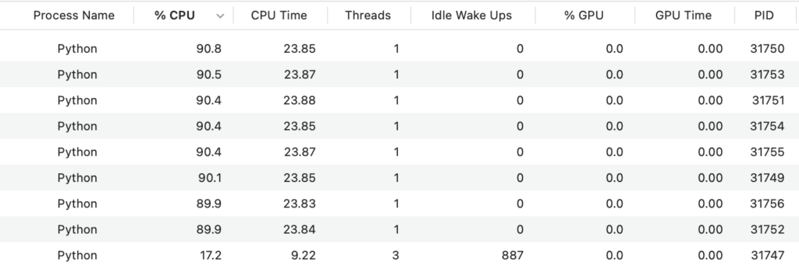
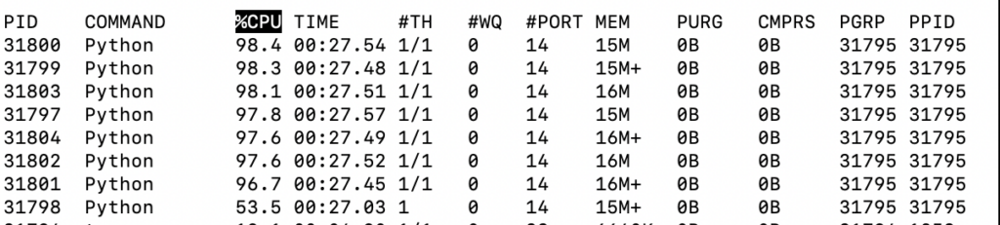

How to Use 100% of All CPU Cores in Python
You can use all CPU cores in your system at nearly 100% utilization by using process-based concurrency.
This is suited for tasks that are CPU-bound, that is, run as fast as your CPU cores can execute.
In this tutorial, you will discover how to update Python programs to use all CPU cores on your system.
Let's get started.
Python Will Not Use All CPUs By Default
Running a regular Python program will not use all CPU cores by default.
Instead, it will run on one CPU core until completion.
This is a problem as modern systems have a CPU with 2, 4, 8, or more cores.
This means your Python programs are only using a fraction of the capabilities of your system.
How can you update your Python programs to use all CPU cores?
Use All CPUs via Multiprocessing
We can use all CPU cores in our system by using process-based concurrency.
This is provided in the Python standard library (you don't have to install anything) via the multiprocessing module.
Process-based concurrency will create one instance of the Python interpreter per process to run our code.
We can configure our program to create one Python process per CPU core in our system, then assign one task or function call to each process.
This will use all CPU cores and fully utilize our system.
There are three ways we can do this, they are:
- Use the multiprocessing.Process class.
- Use the multiprocessing.Pool class.
- Use the concurrent.futures.ProcessPoolExecutor class.
Let's take a closer look at each in turn.
Use All CPUs with the Process Class
We can run a target function in a new process using the multiprocessing.Process class.
This can be achieved by creating an instance of the multiprocessing.Process class and specifying the name of the function to execute via the "target" argument.
For example:
...
# create and configure a new process
process = multiprocessing.Process(target=task)We can then call the start() method in order to start the process and execute the task.
...
# start the new process
process.start()We can wait for the new process to complete by calling the join() method.
For example:
...
# wait for the process to finish
process.join()We can create one process per task that we want to complete, such as one per each CPU core in our system.
You can learn more about running functions in child processes in the tutorial:
Use All CPUs with the Pool Class
We can start a pool of worker processes and issue tasks to the pool to be executed.
This can be achieved using the multiprocessing.Pool class.
Using a pool of workers may be preferred over creating Processes manually as in the previous example as each worker process can be reused for multiple tasks. We can issue as many tasks as we have to the pool and they will be completed as fast as the workers are able.
We can configure the pool with one worker process per CPU core in our system.
For example:
...
# create a process pool
pool = multiprocessing.Pool(8)We can issue one-off tasks to the pool via the apply_async() method that takes the name of the target function and any arguments. This method returns an AsyncResult that provides a handle on the asynchronous task.
For example:
...
# execute a one-off task in the pool
async_result = pool.apply_async(task)We can apply a target function to each item in an iterable as a separate task in the process pool using the map() method on the Pool class.
For example:
...
# issue one task per item in the iterable
pool.map(task, items)You can learn more about using the multiprocessing.Pool class in the guide:
Use All CPUs with the ProcessPoolExecutor Class
We can use a modern process pool that uses the executor framework.
The executor framework is a pattern from other programming languages, such as Java, and provides a consistent way to use a pool of workers across threads and processes.
We can use an executor-based process pool via the concurrent.futures.ProcessPoolExecutor class
The ProcessPoolExecutor class is simpler than the Pool class and perhaps easier to use.
An instance of the ProcessPoolExecutor class can be created and configured with one worker per CPU core in the system.
For example:
...
# create the pool of workers
exe = ProcessPoolExecutor(8)We can then issue one-off tasks via the submit() method that returns a Future object, providing a handle on the asynchronous task.
For example:
...
# issue a one-off task
future = exe.submit(task)We may also call our target function for each item in an iterable, issued as tasks in the pool via the map() method.
For example:
...
# issue one task per item in the iterable
exe.map(task, items)You can learn more about how to use the ProcessPoolExecutor in the guide:
Now that we know how to make full use of the CPUs in our system, let's look at some worked examples.
Example of Slow Task Using One CPU Core
Before we look at making full use of the CPUs in our system, let's develop an example that will only use one CPU core.
The example below defines a task() function that performs a CPU-intensive task.
This task is then called from our program 50,000 times.
Only a single CPU core is used and the program is slow.
The complete example is listed below.
# SuperFastPython.com
# example of a program that does not use all cpu cores
import math
# define a cpu-intensive task
def task(arg):
return sum([math.sqrt(i) for i in range(1, arg)])
# protect the entry point
if __name__ == '__main__':
# report a message
print('Starting task...')
# perform calculations
results = [task(i) for i in range(1,50000)]
# report a message
print('Done.')
Running the example reports a message, then performs the computationally intensive task 50,000 times.
Each task is performed by one and only one CPU core.
As such, the program is slow to execute.
On my system, it takes about 115.3 seconds, or nearly 2 minutes.
Starting task...
Done.How do we know it used a single CPU core?
Firstly, we can check in the top command (available on POSIX systems)
We can see that only a single Python process is running and that it is occupying 99% of one CPU core.
We can also see that overall CPU usage on my system is only 14%.
We can also check the activity monitor on my system, available on macOS.
It shows much the same thing, with a single Python process occupying 99% of one CPU core
It also shows that overall CPU usage on the system is low.
You can perform similar checks using the CPU usage monitoring specific to your system.
Next, let's look at updating the example to use all CPUs via the ProcessPoolExecutor class.
Example of Using All CPUs with the ProcessPoolExecutor
We can update the previous slow example to use all CPU cores in the system via the ProcessPoolExecutor.
This requires first creating an instance of the ProcessPoolExecutor class and configuring it with one worker per CPU core.
I have 8 cores in my system, so I will configure it to have 8 workers. Adapt the example for your system accordingly.
We can then call the task() function for each item in the range via the map() method on the ProcessPoolExecutor.
In order to ensure the ProcessPoolExecutor is closed once we are finished with it, we can use the object via the context manager interface.
For example:
...
# create the process pool
with ProcessPoolExecutor(8) as exe:
# perform calculations
results = exe.map(task, range(1,50000))
Tying this together, the complete example of executing the task using all CPU cores is listed below.
# SuperFastPython.com
# example of a program that uses all cpu cores
import math
from concurrent.futures import ProcessPoolExecutor
# define a cpu-intensive task
def task(arg):
return sum([math.sqrt(i) for i in range(1, arg)])
# protect the entry point
if __name__ == '__main__':
# report a message
print('Starting task...')
# create the process pool
with ProcessPoolExecutor(8) as exe:
# perform calculations
results = exe.map(task, range(1,50000))
# report a message
print('Done.')
Running the example reports a message.
It then creates the ProcessPoolExecutor with 8 workers, then issues all 50,000 tasks.
The 8 workers then complete the tasks as fast as they are able.
Finally, all tasks are done and a message is reported.
In this case, the example completes in about 40.3 seconds on my system. This is about 75 seconds faster or about a 2.86 times speed-up.
Starting task...
Done.How do we know it used all CPU cores?
Firstly, we can check in the top command (available on POSIX systems)
We can see that 8 Python processes are running and each is occupying about 90% of a given CPU core. We can see a 9th Python process, which is the process running all tasks, that is not doing a lot of work itself.

We can also see that overall CPU usage on my system is nearly 100%.

We can also check the activity monitor on my system, available on macOS.
It shows much the same thing, with 8 worker Python processes occupying 90% of 8 CPU cores.

It also shows that overall CPU usage on the system is near 96%.
You can perform similar checks using the CPU usage monitoring specific to your system.
This highlights how we can update our Python programs to use all CPU cores and achieve nearly 100% usage of each core.
Example of Using All CPUs with the Pool
We can also update the slow example to use the multiprocessing Pool class.
This looks almost identical to using the ProcessPoolExecutor.
We can use the context manager interface and issue all tasks to the pool of workers using the map() method.
The complete example is listed below.
# SuperFastPython.com
# example of a program that uses all cpu cores
import math
from multiprocessing import Pool
# define a cpu-intensive task
def task(arg):
return sum([math.sqrt(i) for i in range(1, arg)])
# protect the entry point
if __name__ == '__main__':
# report a message
print('Starting task...')
# create the process pool
with Pool(8) as pool:
# perform calculations
results = pool.map(task, range(1,50000))
# report a message
print('Done.')
Running the example reports a message.
It then creates the Pool with 8 workers, then issues all 50,000 tasks.
The 8 workers then complete the tasks as fast as they are able.
Finally, all tasks are done and a message is reported.
In this case, the example completes in about 36.4 seconds on my system. This is about 78.9 seconds faster or about a 3.17 times speed-up.
The Pool may be faster than the ProcessPoolExecutor in some cases as it may create fewer objects internally when calling the map() method and in turn, transmit less data between worker processes and the main process.
Starting task...
Done.The Pool class may also be more efficient.
In some experiments it appeared to better utilize the CPU cores, reaching nearly 98% usage.

Why Can't We Get Full 100% CPU Utilization?
We can see that we can get nearly 100% CPU utilization across all cores using the multiprocessing module.
High 90s is not 100% utilization though.
Why can't we get full 100% utilization when using process pools?
I suspect this is because of the overhead required to run and manage the program.
Perhaps the interpreter itself, perhaps the transmission of data between processes, perhaps object creation in the process pools.
Nevertheless, by using all cores, we get a dramatic speed increase on the CPU-bound task (e.g. 3x or more).
Takeaways
You now know how to update Python programs to use all CPU cores on your system.